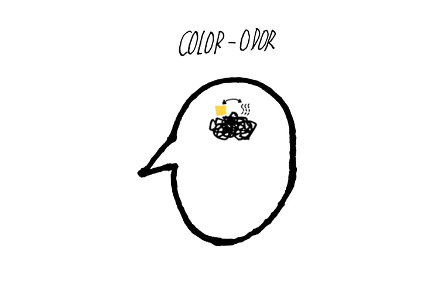
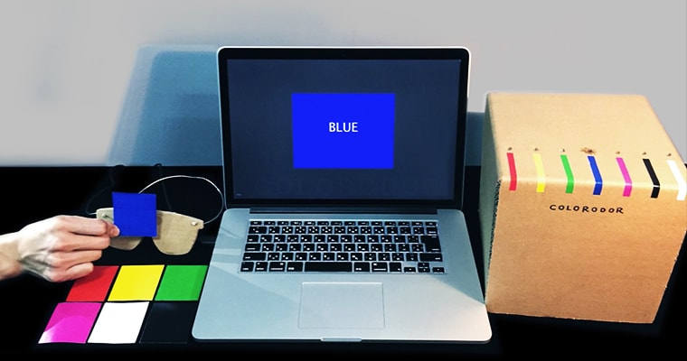

My thoughts:
Good interaction is a good tool to amplify human capabilities. It helps us see and even gives the ability to see more information (which can not be observed by ourselves), since we can not see ourselves without a mirror.
Project info
- CHI EA 2017 (Publiched article)
- Inclusive design
- Wearable devices
What I did
- Related-work research
- Protype design and implementation
- User testing
- Article Writing (Prototype Design section)
Special thanks
- 2 kind volunteers
- Guanyun Wang (Instructor)
Coming up with concept
After several rounds of group discussions and related-work research, we decided to do our project based on the sense of smell, because very few research tried on this topic. So our goal is to help the blind smell colors.
Next step
The next important step is to build up the color-odor correspondence in blind people's mind.
Defining color-odor correspondence
Two blind volunteers participated in our user research to help us define the odors corresponding to seven colors. After that, we bought some liquid chemicals with similar smells as the odors. (More details)

Prototype design
We used Arduino and Processing to make the prototype, which consists of
(1) a webcam capturing the image of seven color cards,
(2) a laptop with a color recognition program,
(3) a piezoelectric transducer system controlled by Arduino that generates scents by vaporizing liquid fragrances.


How it works
Prototype testing
One volunteer tested the prototype and gave us feedback:
(1) the generation of odor is relatively slow,
(2) the accuracy of color recognition could be improved when there is not enough light.

Future work
We hope to be able to integrate the entire device into some blind products or wearable equipments in the future. For instance, blind people use it to choose clothing colors.
Happy ending
It was so lucky that this project was accepted by CHI 2017 Late-breaking work, and I appreciated the good and valuable time in Denver.

Good interaction design helps us see more.